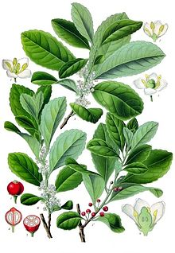

MATE Desktop Omgeving
De MATE Desktop omgeving is de verderzetting van GNOME 2. Het is een intuïtive en aantrekkende desktop omgeving die de traditionele Linux en Unix-achtige systemen vernieuwt.
MATE in nog steeds in bezig met nieuwe technologien te ontwikkelen terwijl ze nog steeds de traditionele desktop ervaring brengt. bekijk de roadmap hier: Roadmap.

Hier vind je meer screenshots van MATE.
Niews
- 2020-02-10 09:00 MATE 1.24 released
- 2019-03-18 09:00 MATE 1.22 released
- 2018-02-07 09:00 MATE 1.20 released
- 2017-03-13 23:30 MATE 1.18 released
- 2016-12-22 01:00 Server Outage
Blogposts zijn ook geïndexeerd door tags en gearchiveerd op datum. Je kan ook steeds een kijkje nemen op Planet MATE daar kan je zien waar de gehele MATE community over blogt.
Welke distributies ondersteunen MATE?
MATE is beschikbaar via de officiele repositories van deze linux distributies:
- Alpine Linux
- Antergos
- AOSC
- Arch Linux
- Debian
- Fedora
- Gentoo
- GNU Guix and GNU GuixSD
- Hamara Linux
- Linux Mint
- Mageia
- Manjaro
- openSUSE
- Parrot Security OS
- PCLinuxOS
- PLD Linux
- Sabayon
- Salix
- Slint
- Solus
- Trisquel GNU/Linux
- Ubuntu
- Ubuntu MATE
- Uruk GNU/Linux
- Vector Linux
- Void Linux
MATE is beschikbaar via onofficiele repositories van deze linux distributies:
Of op Unix:
Je kan ook via DistroWatch.com alle distributies opzoeken die MATE ondersteunen.
De MATE community heeft gedocumenteerd hoe je MATE kan installeren op distributies via install guidelines.
Applicaties
MATE bestaat uit meerdere applicaties. Deze zijn hernoemd om conflicten met GNOME-applicaties te vermijden
Caja

Caja is de officiele file manager van de MATE desktop. Het laat je toe om door je folders te browsen of om je files te bekijken. Je kan ook applicaties lanceren via caja. Het zorgt ook voor alle iconen op de MATE desktop. Het werkt zowel met lokale als remote bestandssysteme. Caja is geforket uit Nautilus.
Pluma

Pluma is een teksteditor die de meeste standaard editor-functies ondersteunt. Het breidt ook deze basisfunctionaliteit uit met andere functies die gewoonlijk niet aan te treffen zijn in eenvoudige teksteditors. Pluma is een grafische applicatie die het bewerken van meerdere bestanden in één venster ondersteunt (soms ook wel tabbladen of MDI genoemd). Pluma ondersteunt volledig internationale tekst door gebruik van de Unicode UTF-8-codering. De kernfunctieset omvat syntaxisaccentuering van broncode, automatische inspringing en ondersteuning voor afdrukken (met afdrukvoorbeeld). Pluma is geforked van Gedit.
Eye of MATE

eom of Eye Of MATE is een eenvoudige grafische viewer voor de MATE desktop dat maakt gebruik van de gdk-pixbuf bibliotheek. Het kan omgaan met grote afbeeldingen, en kan zoomen en scrollen met constant geheugengebruik. De doelen zijn eenvoud en normen nakoming. Eye of MATE is geforked van Eye of GNOME.
Atril

Atril is een eenvoudige documentviewer voor meerdere pagina's. Het kan PostScript (PS), Encapsulated PostScript (EPS), DJVU, DVI, XPS en Portable PDF-bestanden (Document Format) weergeven en afdrukken. Indien ondersteund door het document, staat het ook toe tekst zoeken, tekst naar het klembord kopiëren, hypertekstnavigatie en inhoudsopgaves. Atril is geforked van Evince.
Engrampa

Engrampa is een archiefbeheerder voor de MATE-omgeving. Hiermee kunt u archieven maken en wijzigen, de inhoud bekijken van een archief, of bestand in een archief. Je kan ook archieven uitpakken. Engrampa is geforked van File Roller.
MATE Terminal

MATE Terminal is een terminal-emulatie-applicatie die u kunt gebruiken om toegang te krijgen tot een UNIX-shell in de MATE-omgeving. Hiermee kunt u elke toepassing uitvoeren die is is ontworpen voor VT102-, VT220- en xterm-terminals. MATE Terminal heeft ook de mogelijkheid om meerdere terminals in één venster (tabbladen) te ondersteunen. Er kan ook gebruik gemaakt worden van verschillende configuraties (profielen). MATE Terminal is geforked van GNOME-terminal.
Waar komt de naam van?
Da naam MATE, is uitgesproken als Ma-Tay, het komt van yerba maté, een soort hulst afkomstig uit subtropisch Zuid-Amerika. De bladeren bevatten cafeïne en worden gebruikt voor het maken van een infusie-drankje genaamd mate.
